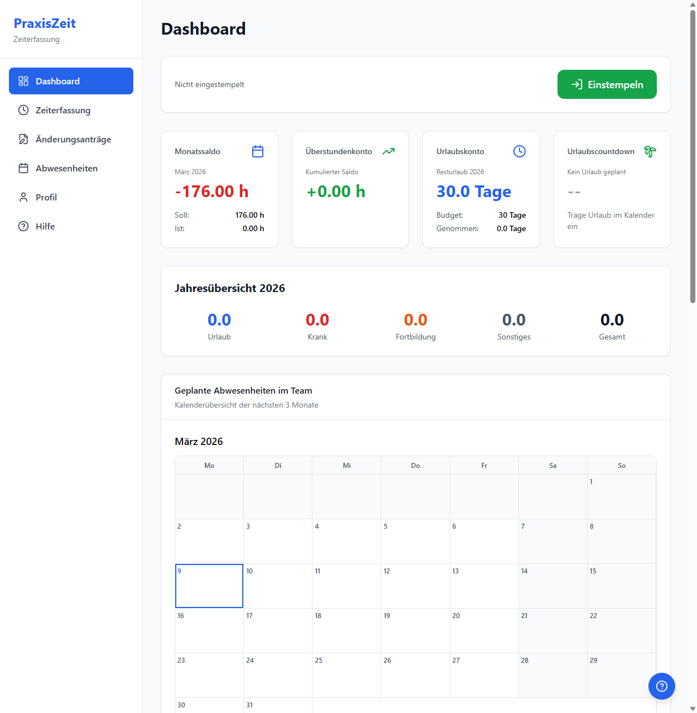
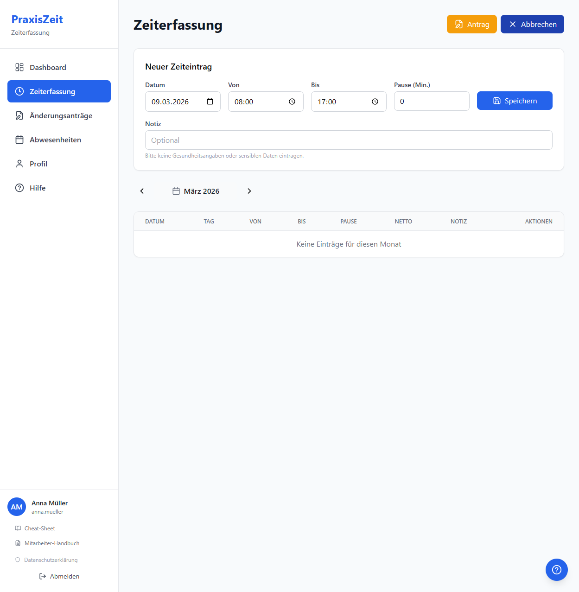
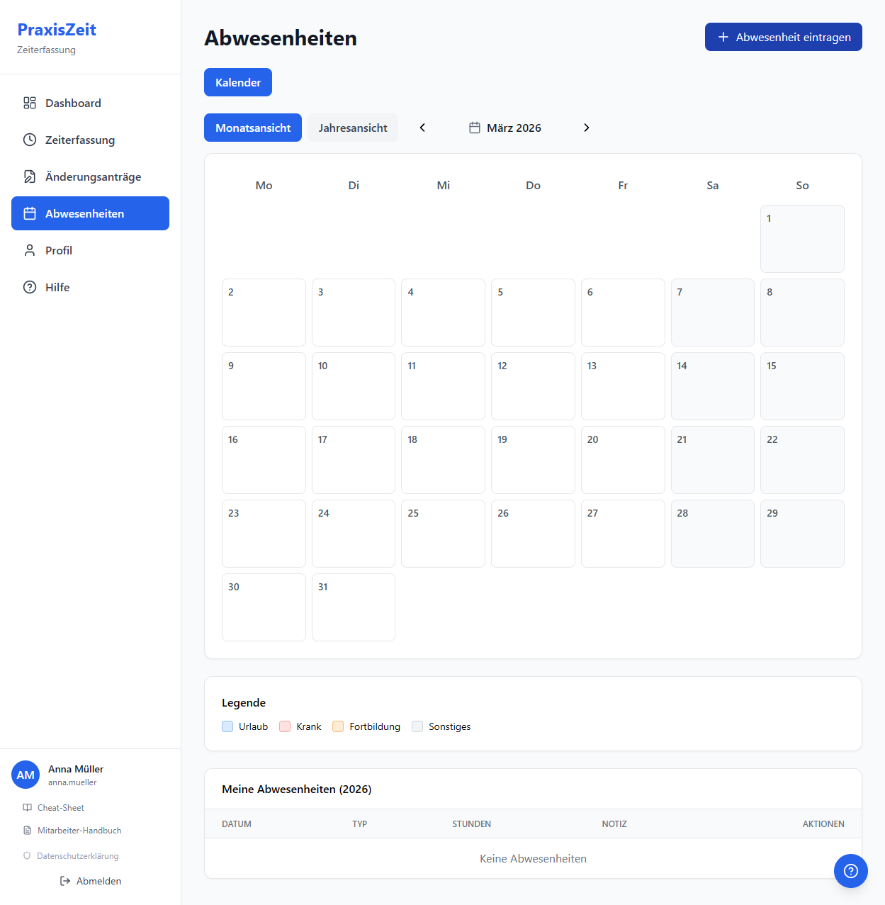
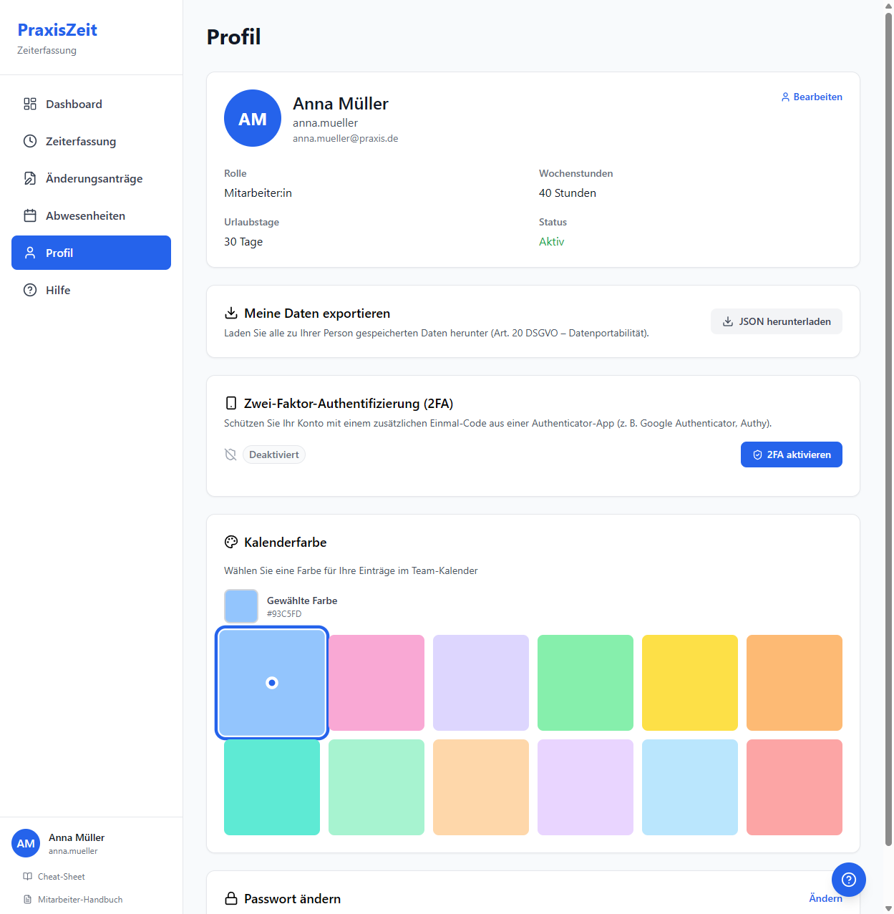

Digitale Zeiterfassung – Einführung & Schulung
„Arbeitgeber sind verpflichtet, ein objektives, verlässliches und zugängliches System einzurichten, das die von den Arbeitnehmern geleistete tägliche Arbeitszeit misst."
Arbeitszeiten schnell eintragen. Automatische Berechnung von Über- und Unterstunden.
Urlaub, Krankheit & Fortbildung digital beantragen und im Team-Kalender sehen.
Monats- und Jahresberichte per Klick als Excel-Datei – prüfungssicher archiviert.
Der erste Blick nach dem Einloggen zeigt alles Wichtige auf einen Blick.
E-Mail & Passwort – beim ersten Login sofort ändern.
Ist-Stunden, Soll-Stunden & Überstundensaldo auf einen Blick.
Resturlaub mit Ampel-Anzeige (grün / gelb / rot).

Dashboard – Ansicht nach dem Login

Formular „Neuer Zeiteintrag"
Urlaub, Krankheit & mehr in wenigen Sekunden erfasst.
Einzel- oder Zeitraum. Wochenenden & Feiertage automatisch ausgeschlossen.
Zählt nicht auf das Urlaubskonto.
Externe Schulungen separat erfasst.
Mit freiem Notizfeld.
📆 Im Teamkalender sind alle Abwesenheiten auf einen Blick sichtbar.

Abwesenheitskalender mit Monatsansicht
Beim ersten Login sofort ändern.
Mind. 10 Zeichen, Groß- & Kleinbuchstaben, eine Ziffer.
Wochenstunden, Urlaubstage & eigene Farbe im Teamkalender einsehbar.
Zugangsdaten sind persönlich – nicht weitergeben. Bei Verlust sofort die Praxisleitung informieren.

Profil – Daten & Passwort verwalten
Alle Mitarbeiterinnen, tagesgenaue Einträge, Soll/Ist, Abwesenheiten.
Excel-Export per Klick.
Kompakte 12-Monats-Übersicht: Soll, Ist, Saldo, Urlaubstage, Krankheitstage.
365 Tage pro Mitarbeiterin – vollständige Dokumentation für Prüfbehörden.
Die Anwendung läuft in der Praxis – kein Download, kein App-Store.
🖥️ Einfach im Browser öffnen – Google Chrome, Firefox oder Edge empfohlen.
Wir nehmen uns jetzt Zeit für Ihre Fragen.
Bei späteren Fragen steht die Praxisleitung gern zur Verfügung.